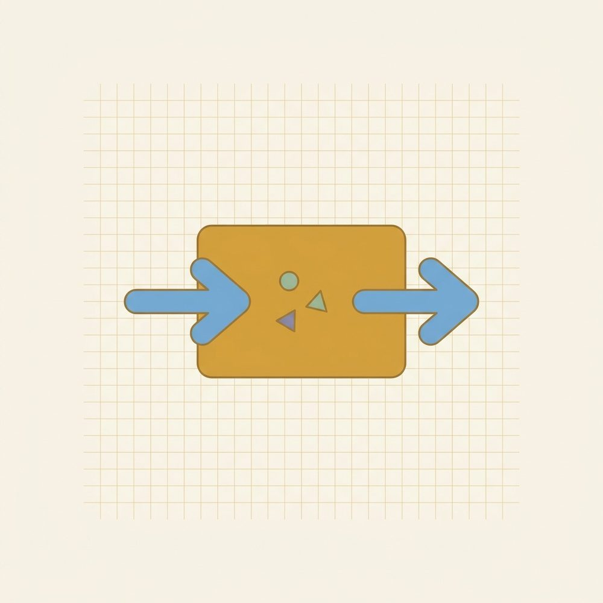

Introducing Functions
What a function is, f(x) notation, domain & range, table/graph/equation/words

What you need first: Unit 2 (solving equations and evaluating expressions). Unit 3 helps too — the unit rate idea comes back here as a function's constant rate of change. By the end of this unit, you'll be able to:
- Decide whether a table, a set of pairs, a graph, or a rule is a function (each input is paired with exactly one output; the vertical line test).
- Read and use f(x) notation; evaluate a function at a number and at a simple expression; explain why f(x) is not multiplication.
- State the domain and range from a small table or list, and for a line.
- Move the same relationship between table, graph, equation, and words, and tell linear from nonlinear from any of those.
Before you start, a small habit that pays off all through this unit: redo two or three problems from a lesson or two back from memory first. It only takes a few minutes, and it's one of the most useful things you can do.
This unit introduces the word the rest of the course leans on: function. Once it's solid, every later topic — lines, systems, sequences, the U-shaped curves near the end — is really just a function with a new name. So there's no rush here. The aim is to get comfortable, not to get fast. Everything builds on the arithmetic and the equation-solving you already have.
Lesson 4.1: What is a function
Think about a vending machine for a moment. You press a button and you get exactly one snack. Press B4 today, you get pretzels. Press B4 tomorrow, you get pretzels again — same button, same snack, every time. That reliable matching of each button to one snack is the whole idea behind a function. A function is a dependable pairing: each thing you put in comes back matched to exactly one thing.
Notice what the machine does not promise. It doesn't promise that every snack has its own button. Two different buttons can both dispense pretzels, and that's a perfectly good machine — annoying, maybe, but not broken. What would count as broken is a button that gives pretzels sometimes and a soda other times. Press B4 and you can't tell what you'll get. That machine you'd kick.
That asymmetry is the entire lesson, so say it slowly. Two inputs landing on the same output is fine. One input giving two different outputs is the thing a function never does. Repeats are only a problem on the input side.
There's no formula anywhere in that vending machine, just a list of which button gives which snack. Hold onto that, because it's easy to assume a function has to be an equation. It doesn't. The pairing itself is the function, however it's written down.
Here's that idea as a picture you can draw. Put the inputs in a column on the left, the outputs in a column on the right, and draw an arrow from each input to the output it's matched with.
The reading rule follows the vending machine exactly: it's a function when every input on the left has exactly one arrow leaving it. Two arrows landing on the same right-hand value — two buttons, same snack — is fine. But two arrows leaving one left-hand value means that single input has two outputs, and that breaks it.
Now the same idea on a graph, which is where you'll meet it most often. On a graph, an input is an x-value: a spot along the horizontal direction. "All the points sharing one input" is a single vertical line standing at that x. So sweep a vertical line slowly across the graph, left to right, and watch how many times it touches. If it never touches the graph in more than one place, every input has at most one output, and you've got a function. If a vertical line ever hits the graph in two places at once, that one input has two outputs, and it isn't. This sweep has a name — the vertical line test — and walking your finger across the page as the imaginary line is a fine way to do it.
A quick way to carry this in your pocket: each input is paired with exactly one output, and repeats are only a problem on the input side. Say it back to yourself; you'll use it constantly.
New words
- 4.1.d1 Function — a pairing (a correspondence) that matches each input with exactly one output. The pairing can be given any way at all — a list of (input, output) pairs, a table, a graph, or a formula. What makes it a function is the one-output-per-input promise, not the form it comes in. (Heads-up: in 4.2 a formula like f(x)=3x−1 is called a rule — a rule is one common way to give a function's pairing, not the definition itself. A pair-list with no formula is still a function.)
- 4.1.d2 Input / output — what you feed in, and what comes back, written as a pair (input, output). The inputs form one set and the outputs form another; in 4.2 those sets get the names domain and range. (Later the input is also called the variable and the output its value.)
- 4.1.d3 Vertical line test — a graph is a function exactly when every vertical line hits it in at most one point (one hit, or none). If some vertical line hits the graph twice, that one input has two outputs, so it is not a function.
Read these next examples slowly, one at a time, and decide the answer in your head before you read the verdict. The whole skill is checking the input side, so practice spotting where to look.
Worked example
Example 1 — a set of pairs (no formula needed). Is {(1,2),(2,4),(3,6),(4,8)} a function? This is just a pairing — a list matching inputs to outputs, with no rule or formula written anywhere, and that's allowed, because the pairing itself is the function. The inputs are 1, 2, 3, 4. Each one is different, each appears once, so each input is matched with exactly one output. Yes, a function.
Example 2 — a repeated output (still fine). Is {(1,5),(2,5),(3,5)} a function? The output 5 shows up three times, which can look suspicious at first. But check the inputs: 1, 2, 3, each appearing once, each with a single output. A repeated output is allowed — this is the "two buttons, same snack" case — so it's yes, a function.
Example 3 — a split input (broken). Is {(1,2),(1,3),(2,4)} a function? Look at the input 1: it's paired with 2 and also with 3. One input, two outputs — the broken-button case. No, not a function.
Example 4 — a table.
| input x | 0 | 1 | 2 | 0 |
|---|---|---|---|---|
| output | 4 | 5 | 6 | 9 |
A table is read the same way; just scan the input row for a repeat. Input 0 appears twice, giving 4 once and 9 once — two outputs for one input. No, not a function.
Example 5 — a graph (vertical line test). Take a non-vertical straight line such as y=2x+1. Sweep a vertical line across it and it touches in exactly one spot everywhere you put it. Function. Now take a circle centered at the origin, or a sideways "U" (a parabola opening to the right): a vertical line through the middle cuts across it in two places at once. Not a function. One straight line is the exception worth knowing. A vertical line such as x=3 is not a function: every point on it sits at the same input, x=3, so that single input is paired with infinitely many outputs. It's the cleanest possible example of one input with many outputs.
Now that you've seen the right reading a few times, here's the slip that snares almost everyone at first. It's natural to decide that any repeat at all kills a function — a sensible-sounding "no repeats allowed" rule. But go back to the machine: two buttons giving the same snack doesn't break anything. So when a number repeats, don't reject it on sight. Look only at the input side, and ask whether one input is trying to give two different outputs. That, and only that, is what breaks a function.
One more place to be careful, and it's about direction. The test line is vertical, not horizontal. An input is an x, and the line that gathers all the points sharing one x stands straight up and down. If you find yourself sliding a line up and down the page instead of across it, you're testing the wrong thing.
Check yourself
- 4.1.c1 Make a set of three pairs that is not a function, and say which input breaks it. (One answer: {(2,1),(2,5),(3,9)} — the input 2 is paired with both 1 and 5, so that's the one that breaks it.)
- 4.1.c2 Here's a table where the output 7 shows up three times. Can it still be a function, and what would you have to check? (Yes, it can — a repeated output is fine. Check the inputs: as long as no input appears twice with different outputs, it's a function.)
- 4.1.c3 Why does the vertical line test, and not a horizontal one, decide it? (A vertical line gathers all the points that share one input; two hits means one input with two outputs, which is broken. A horizontal line would gather points that share one output — but two inputs sharing an output is allowed, so a horizontal line tests nothing about being a function.)
Mixing the kinds of problem feels harder than repeating one kind, and that's the point: switching between them is what makes the idea stick to next week. Every problem below has its answer at the end of the lesson, and if one stalls you, look back at the worked example it matches.
Practice
A. Sets of pairs — function or not? (give the reason)
- 4.1.1 {(0,1),(1,2),(2,3)}
- 4.1.2 {(2,4),(3,4),(5,4)}
- 4.1.3 {(1,1),(1,2),(3,4)}
- 4.1.4 {(-1,0),(0,1),(1,0)}
- 4.1.5 {(5,5),(5,6)}
B. Tables — function or not?
- 4.1.6 inputs 1,2,3,4 → outputs 2,2,2,2
- 4.1.7 inputs 3,4,3 → outputs 1,2,8
- 4.1.8 inputs -2,-1,0,1 → outputs 4,1,0,1
C. Descriptions / graphs — function or not?
- 4.1.9 "Each person is matched to their birth year." (input = person)
- 4.1.10 "Each birth year is matched to a person born then." (input = year)
- 4.1.11 The graph of a single non-vertical straight line.
- 4.1.12 The graph of a circle.
- 4.1.13 The graph of the vertical line x=3.
- 4.1.14 "Each student is paired with the one chair they sit in." (input = student)
AnswersTry each one yourself first, then open to check.
- Function — inputs 0,1,2 all distinct.
- Function — output 4 repeats, but inputs 2,3,5 are distinct (two buttons, same snack).
- Not a function — input 1 gives both 1 and 2.
- Function — output 0 repeats, but inputs -1,0,1 are distinct.
- Not a function — input 5 gives both 5 and 6.
- Function — inputs all distinct; identical outputs are allowed.
- Not a function — input 3 appears twice with outputs 1 and 8.
- Function — inputs -2,-1,0,1 distinct; repeated output 1 is fine.
- Function — each person has exactly one birth year.
- Not a function — a year can match many people (one input → many outputs).
- Function — a non-vertical line passes the vertical line test (each x has exactly one y).
- Not a function — a vertical line through it hits twice.
- Not a function — every point shares the input x=3, so that one input has infinitely many outputs; it fails the vertical line test.
- Function — each input (a student) is paired with exactly one output (a chair). It's a plain pairing, no formula needed.
Lesson 4.2: Function notation f(x), domain & range
A function is a pairing, you've seen, and a formula is one neat way to spell out that pairing. Now you need a compact way to write "the output of this rule at this input." That's what f(x) notation does, and once it's comfortable, it stops getting in the way — which matters, because every later unit writes lines and curves this way.
Start with something homier than symbols: a recipe. Suppose the recipe is triple it, then subtract one. Give the recipe a short name, f. Then "run the number 2 through recipe f" means triple the 2 to get 6, subtract 1, and land on 5. Written in the new notation, that whole sentence is f(2) = 5. The letter f names the recipe; the number tucked inside the parentheses is what you dropped into the bowl.
Here's the one thing to nail down right away, because the parentheses are doing something unusual. In f(2), the parentheses do not mean multiply. They mean feed this in. So f(2) is not f times 2 — it's "the output of recipe f when you put in 2." Read it out loud as "f of 2," and that misreading mostly takes care of itself.
You can picture the same thing as a little machine with a readout. A number goes in the top, the rule runs inside, and the answer lights up on the display: drop in 2, and f(2) = 5 shows on the screen. That picture also gives you two words you'll need. Every input the machine is willing to accept is its domain. Every output that can ever light up on the display is its range.
Now to the symbols themselves. The habit that will save you again and again is to write the input inside parentheses when you substitute, like this: $$f(2) = 3(2) - 1 = 6 - 1 = 5$$ Notice it's written in full — 3(2) − 1, then 6 − 1, then 5 — not jumped straight to the answer. Those parentheses look fussy on a friendly number like 2, but they're what keeps the sign honest the moment a negative shows up, and they let you feed in something bigger than a number. You can drop a whole expression into the recipe: with the same f, f(a + 1) = 3(a + 1) − 1 = 3a + 3 − 1 = 3a + 2. Whatever sits in the parentheses goes everywhere x used to be.
For domain and range, stay concrete and you won't go wrong. When a function is given as a table or a list, the domain is simply the input column, and the range is the output column with any repeats listed once. When it's a line like f(x) = 3x − 1, any real number is a fair input and any real number can come back out, so the domain and the range are both all real numbers.
New words
- 4.2.d1 Rule — a formula that gives a function's pairing, like f(x)=3x−1. A rule is one way to specify a function (the way that comes with a computation); a table or a pair-list is another. So "rule" here means the formula, not the definition of "function" from 4.1.
- 4.2.d2 Function notation f(x) — a name for a rule (f) together with what you fed it (x). Read "f of x." It is not "f times x."
- 4.2.d3 Evaluate — substitute a value for the input and compute. f(2) means "run 2 through the rule f."
- 4.2.d4 Independent / dependent variable — the input x is the independent variable (you pick it freely); the output f(x) is the dependent variable (its value depends on x). On a graph, the input goes on the horizontal axis and the output on the vertical.
- 4.2.d5 Domain — the set of allowed inputs.
- 4.2.d6 Range — the set of outputs you actually get.
- 4.2.d7 Discrete domain — the inputs are separate values (a finite list, or counting numbers like 0,1,2,3,…). You plot them as separate dots and you list them in braces, e.g. {1,2,3,4}. Don't connect the dots.
- 4.2.d8 Continuous domain — the inputs are every real number across a range (no gaps). The graph is an unbroken line or curve, so you describe it in words (e.g. "all real numbers") rather than listing them.
Read these one line at a time, and ask why each line follows from the one before. The substitution-with-parentheses habit is the thing to watch for.
Worked example
Example 1 — f(x)=3x-1 at several inputs. $$f(2)=3(2)-1=6-1=5,\quad f(0)=3(0)-1=-1,\quad f(-2)=3(-2)-1=-6-1=-7.$$ Look at the parentheses around the −2. Writing 3(−2) keeps the sign attached, so it becomes −6 and the answer lands on −7. That's the payoff for the fussy parentheses on the easy cases.
Example 2 — "not multiplication." Suppose f(2) gets read as f·2, as if f were a number to multiply by. There is no number f here; f is just the name of the recipe, and f(2) means the recipe's output at 2. Run it properly: 3(2) − 1 = 5. Reading it aloud as "f of 2" is the quickest cure.
Example 3 — g(x)=x²+1. $$g(3)=3^2+1=9+1=10,\quad g(0)=0+1=1,\quad g(-2)=(-2)^2+1=4+1=5.$$ The one to slow down on is g(−2). The parentheses around −2 mean you square the whole input: (−2)² is (−2)(−2) = +4, not −4. So g(−2) comes out to 5.
Example 4 — evaluate at an expression. With f(x)=3x-1: $$f(2a)=3(2a)-1=6a-1.$$ Whatever sits in the parentheses goes everywhere x was — here 2a takes x's place, so 3(2a) is 6a.
Example 5 — domain & range from a table. For
| x | 1 | 2 | 3 | 4 |
|---|---|---|---|---|
| f(x) | 5 | 5 | 7 | 9 |
the Domain is the input row, {1,2,3,4}. The Range is the outputs with repeats listed once: {5,7,9}. The output 5 happens at both x=1 and x=2, but you write it a single time, because the range is just the set of values that come out.
Example 6 — discrete vs. continuous domain (why braces for one, "all reals" for the other). This is the difference between Example 5's table and the line f(x)=3x−1.
- A table or pair-list gives a discrete domain — a handful of separate inputs. You plot them as separate dots and list them in braces. Concrete case: tickets cost \$12 each, so the cost of n tickets is t(n)=12n. You can buy 0, 1, 2, 3, … tickets but never 2.5, so the domain is the separate whole numbers {0,1,2,3,…} — separate dots, don't connect them.
- A line like f(x)=3x−1 accepts every real number in between — there are no gaps — so its domain is continuous: an unbroken line, described in words as "all real numbers." Concrete case: a candle's height after t hours, for any t from 0 to 5; time can be 2.5 hours or 2.501 hours, so the inputs fill the whole range and the graph is an unbroken curve.
So the form of the answer follows the domain: a discrete domain → list in braces {…}; a continuous domain → say "all real numbers" (or "all real numbers from 0 to 5"). The one-line check: can the input land between two of your values? If no (tickets), it's discrete dots; if yes (hours), it's a continuous line. (No interval notation yet — that's later; words are enough here.)
After all that, here's a clean one to get the rhythm back before the practice mixes things up. With f(x) = 3x − 1, find f(1): substitute to get 3(1) − 1 = 3 − 1 = 2. One input, one substitution, done. That's the move underneath every evaluation in this lesson.
With a few clean evaluations behind you, look at the trickiest spot. When a negative goes into a squared term, the parentheses are everything. Reading g(−2) without them invites −2², which a lot of people would compute as −4, squaring the 2 and leaving the minus outside. But the input is the whole −2, so it's (−2)², and a negative times a negative is positive: +4. If you write the parentheses every time you substitute, this slip mostly can't happen. Substitute, then compute, in that order.
Check yourself
- 4.2.c1 With h(x)=2x+1, find h(-3), and say each step out loud. (h(−3) = 2(−3) + 1 = −6 + 1 = −5. The parentheses keep the −3 intact, so 2(−3) is −6.)
- 4.2.c2 Someone reads f(5) as "f times 5." In one sentence, what's wrong? (f isn't a number, so nothing is being multiplied; f names the rule, and f(5) means the rule's output when you feed in 5.)
- 4.2.c3 Give the domain and range of {(0,2),(1,2),(2,8)}, and explain why 2 is written once in the range. (Domain {0,1,2}; range {2,8}. The output 2 comes up at two inputs, but the range is a set of values, so each value is listed once.)
The problems below jump between evaluating and reading domain and range, which takes a little more effort than a single drill. Answers are at the end of the lesson. When one stalls you, the worked example it's built on is the place to look.
Practice
A. Evaluate f(x)=3x-1.
B. Evaluate g(x)=x²+1.
C. Evaluate (mixed rules).
D. Domain & range (from the explicit data).
- 4.2.13 State domain and range of {(1,3),(2,6),(3,9)}.
- 4.2.14 State domain and range of {(-2,4),(-1,1),(0,0),(1,1)}.
- 4.2.15 State the domain and range of the line f(x)=3x-1.
E. Discrete or continuous domain? (say which, and why)
AnswersTry each one yourself first, then open to check.
- f(2)=5 2. f(0)=-1 3. f(-2)=-7 4. f(5)=14 5. f(-1)=-4
- g(3)=10 7. g(0)=1 8. g(-2)=5 9. g(1)=2
- q(4)=5-8=-3 11. r(-3)=9-3=6 12. p(-1)=-4+2=-2
- Domain {1,2,3}, Range {3,6,9}.
- Domain {-2,-1,0,1}, Range {0,1,4} (output 1 listed once).
- Domain: all real numbers; Range: all real numbers.
- Discrete — you can only buy a whole number of pizzas (0,1,2,…), never 2.5, so the inputs are separate dots.
- Continuous — time can be any real number from 0 to 4 (2.5 hours is fine), so the inputs fill the range and the graph is an unbroken curve.
- Continuous — a line accepts every real number with no gaps, so its domain is an unbroken line.
Lesson 4.3: Multiple representations; linear vs. nonlinear
A function rarely shows up in the form you'd have picked. Sometimes it's a sentence, sometimes a table, sometimes an equation, sometimes a picture. The useful skill is seeing that those are four views of one and the same relationship, and being able to slide from any one to any other. This is exactly the fluency the next unit builds on when it starts graphing lines.
Start with a plain sentence: start with \$1, and add \$2 every step. That's a relationship between a step number and an amount of money, and you can lay it out as a table by just following the instruction:
| x | 0 | 1 | 2 | 3 |
|---|---|---|---|---|
| f(x)=2x+1 | 1 | 3 | 5 | 7 |
At step 0 you have the starting \$1. Each step adds \$2: 1, then 3, then 5, then 7. The same relationship has an equation too — f(x) = 2x + 1 — and if you plot the table's pairs as points, they fall in a straight line. Words, table, equation, graph: one relationship, four faces.
Look closely at the output row. From 1 to 3 is +2; from 3 to 5 is +2; from 5 to 7 is +2. Equal steps in x (here, +1 each time) produce equal steps in the output (+2 each time). That steady, repeating step is what your eye reads as "straight" when the points are plotted, and it has a name: a constant rate of change. A function whose rate of change is constant — equal x-steps always giving equal output-steps — is a linear function, and its graph is a straight line.
Not every relationship is so steady. Watch what happens with y = x²:
| x | 0 | 1 | 2 | 3 |
|---|---|---|---|---|
| y=x^2 | 0 | 1 | 4 | 9 |
The differences are 1 − 0 = 1, then 4 − 1 = 3, then 9 − 4 = 5: the steps go 1, 3, 5, and they keep growing. The rate of change isn't constant, so this is a nonlinear function, and its graph curves instead of running straight. Here's the line and the curve side by side 4.3.f1, so you can see "straight versus curved" at a glance. The curve has a name you'll meet again — a parabola — but for now the point is just that changing steps mean a bend, not a line.
That comparison is the heart of it, so here are the two graphs together once more, with their difference rows underneath 4.3.f2: a constant difference draws a straight line, and a growing difference draws a curve.
One thing the constant-difference shortcut quietly assumes: it only works when the x-values themselves step evenly. If x jumps 1, 2, 4, 8, the outputs aren't being measured over equal stretches, so equal output-differences wouldn't mean a straight line. Always check the inputs are evenly spaced first; then read the output differences.
The four faces are meant to be reversible, not just read left to right. You can go from equation to table by plugging in x-values, and you can go from table back to equation by reading the steady step. For a linear table, that backward move is short: the constant step is the number that sits in front of x, and the output at x = 0 is the constant added on. Once you've recovered the equation, check it against one row of the table to be sure.
New words
- 4.3.d1 Linear function — constant rate of change; its graph is a straight line; its equation has the form y=mx+b (equivalently f(x)=mx+b), where — looking ahead to Unit 5 — m is that constant step (how much the output changes per +1 in x) and b is the starting output at x=0. For now you don't need to manipulate m and b; just recognize the straight-line shape and the constant step.
- 4.3.d2 Constant rate of change — equal steps in x always produce equal steps in the output. (This is the unit rate from Unit 3, and it becomes slope in Unit 5.)
- 4.3.d3 Nonlinear function — rate of change is not constant; the graph curves (e.g. y=x²).
Read each example a line at a time. The move to study here is reading the constant step off a table.
Worked example
Example 1 — build a table from f(x)=2x+1; note the constant step.
| x | 0 | 1 | 2 | 3 |
|---|---|---|---|---|
| f(x)=2x+1 | 1 | 3 | 5 | 7 |
Output differences: 3-1=2, 5-3=2, 7-5=2 — constant +2 for each +1 in x. Linear. That constant +2 is the rate of change (the future slope).
Example 2 — contrast with y=x².
| x | 0 | 1 | 2 | 3 |
|---|---|---|---|---|
| y=x^2 | 0 | 1 | 4 | 9 |
Differences: 1-0=1, 4-1=3, 9-4=5 — 1,3,5, not constant. Nonlinear (this curve is a parabola).
Example 3 — linear-or-not from a table (no equation given).
| x | 1 | 2 | 3 | 4 |
|---|---|---|---|---|
| y | 1 | 4 | 7 | 10 |
Equal x-steps of +1; output steps 3,3,3 — constant. Linear. (Rule: y=3x-2.)
Example 4 — same relationship, four faces (translate in both directions).
- Words: "start at \$1, add \$2 each step."
- Equation: f(x)=2x+1.
- Table: the table from Example 1.
- Graph: a straight line through (0,1) rising 2 for every 1 right.
All four describe one function, and the skill runs both ways: given the equation you can build the table (plug in x=0,1,2,3 to get 1,3,5,7), and given the table you can read off the equation (the constant step +2 is the number in front of x, and the value at x=0 is the +1, so f(x)=2x+1). Practice going each direction, not just left-to-right.
Example 5 — both directions explicitly (table ↔ equation).
- Equation → table. From g(x)=5x−2, build the table at x=0,1,2,3: g(0)=−2, g(1)=3, g(2)=8, g(3)=13.
| x | 0 | 1 | 2 | 3 |
|---|---|---|---|---|
| g(x)=5x−2 | −2 | 3 | 8 | 13 |
- Table → equation. Now go the other way. Given this table
| x | 0 | 1 | 2 | 3 |
|---|---|---|---|---|
| y | 2 | 5 | 8 | 11 |
read the constant step (5−2=3, 8−5=3, 11−8=3 → +3 per step, so 3 sits in front of x) and the start at x=0 (that's 2), giving y=3x+2. Check it against the table: 3(2)+2=8. Same relationship, recovered from numbers alone.
After all that translating, here's a clean one to settle the idea. Outputs go 2, 2, 2, 2 for x = 0, 1, 2, 3. The steps are 0, 0, 0 — constant — so it's linear, with a rate of change of 0. A perfectly flat, steady relationship is still linear; the steady step just happens to be nothing.
A couple of slips to know about, now that you've done the real thing a few times. The first sounds harmless: deciding a relationship is linear because the outputs climb by the same amount, without first checking that the inputs step evenly. Equal output-jumps only mean a straight line when they're measured over equal input-steps, so look at the x-row first. The second is a worry that the curve from Example 2 somehow "failed." It didn't. A curve is still a perfectly good function. It sails through the vertical line test from Lesson 4.1; it simply isn't a straight one. Nonlinear isn't broken; it's just not a line.
Check yourself
- 4.3.c1 Here's a table with x = 0,1,2,3 and y = 2,2,2,2. Linear or not, and what's its rate of change? (Linear — the output steps are 0, 0, 0, which is constant — and the rate of change is 0.)
- 4.3.c2 Turn the words "start at 10 and lose 1 each step" into an equation and a four-row table. (Equation: y = 10 − x. Table at x=0,1,2,3: outputs 10, 9, 8, 7.)
- 4.3.c3 A table's outputs go 2, 6, 12, 20 for x=1,2,3,4. Linear or nonlinear, and how can you tell without graphing? (The x-steps are even, +1 each. The output steps are 4, 6, 8 — not constant — so it's nonlinear; you can tell straight from the changing differences.)
These mix building tables, classifying, and translating both ways, so expect to switch gears between them. Each answer is at the end of the lesson. If one stalls you, find the worked example it's based on.
Practice
A. Fill the table from the rule.
- 4.3.1 f(x)=3x: find outputs at x=0,1,2,3,4.
- 4.3.2 k(x)=10-x: find outputs at x=0,1,2,3.
- 4.3.3 f(x)=2x+1: find outputs at x=-2,-1,0,1.
B. Linear or nonlinear? (equal x-steps; check the output differences)
- 4.3.4 x:0,1,2,3 → y:1,4,7,10
- 4.3.5 x:0,1,2,3 → y:0,1,4,9
- 4.3.6 x:1,2,3,4 → y:5,5,5,5
- 4.3.7 x:0,1,2,3 → y:1,2,4,8
C. Match the representation.
- 4.3.8 Which equation matches the words "start at \$1 and add \$2 each step": (a) f(x)=x+2, (b) f(x)=2x+1, (c) f(x)=2x?
D. Translate both directions (table ↔ equation).
AnswersTry each one yourself first, then open to check.
- 0,3,6,9,12 — constant +3, linear.
- 10,9,8,7 — constant -1, linear.
- -3,-1,1,3 — constant +2, linear.
- Linear — output steps 3,3,3.
- Nonlinear — steps 1,3,5 (this is y=x²).
- Linear — steps 0,0,0 (a constant/horizontal function; rate of change 0).
- Nonlinear — steps 1,2,4 (doubling).
- (b) f(x)=2x+1 — start 1 at x=0, add 2 per step.
- y=3x+2 — constant step +3 (so 3 in front of x), value 2 at x=0. Check: 3(3)+2=11.
- -2, 3, 8, 13 — at x=0,1,2,3 (constant step +5, linear).
You can now decide whether a pairing is a function and run the vertical line test on a graph; read and use f(x) without mistaking it for multiplication, evaluate at numbers and at negatives without losing a sign, and give a domain and range; and move one relationship between words, a table, an equation, and a graph, telling a straight line from a curve by whether its rate of change holds steady.
A few threads worth carrying forward. Every time you evaluated a function, you were also practicing order of operations and signed arithmetic from Units 1 and 2, which is why those keep mattering. The constant rate of change from this lesson is the same unit rate you met in Unit 3, and in Unit 5 it gets one more name, slope. A good warm-up before that unit: build a table from f(x) = mx + b and read off its constant step. From here on, when a line or a curve shows up, it helps to hear it as a function. The line is a function, and f(x) = 2x + 1 just gives it a name.